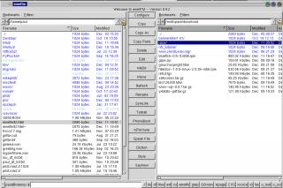
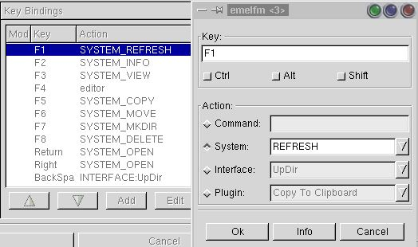

After migrating from the Amiga to the original Slackware distribution of Linux, I spent several years searching out a replacement for Directory Opus. Now, a 'file manager' means different things to different people. Some simply want to copy, move, rename files etc. Others want to be able to operate on those files in esoteric ways. At whim. Configurably. As you may have guessed, I'm one of the latter.
I tried everything that came along, whether they claimed to be clones of Dopus or just great file managers. All fell short in some way. Some were too slow, others were fast, but not configurable enough. Still others had both, but configuring them was difficult.
In the mean time, I used the venerable Midnight Commander (good ol' mc). You can do anything with mc - you just have to configure it, but it's still console based and a lot of basic operations are more easily done from a gui. New problem: after six years of using mc, I had added the desire for a Linux Dopus that behaved like mc. Great. Now I wanted superb keyboard navigation and key-mapping and mousing and configurable button banks. Prospects were looking pretty grim
And then Michael Clark came along and wrote emelfm.
emelfm has all these - and more.
As a graphical file manager, emelfm has no peer. Any file operation imaginable may be carried out using emelfm. It has all the functionality of a modern gui based file manager, yet at the same time mirrors the functionality of mc, including the ctrl+o shell. In addition, emelfm allows you to easily construct shell scripts of a few lines and put them on a button - or in a context menu. Yes, you could put these in a shell script or an alias (and, of course, you still can), but there's something just so very nice about drag-selecting a few files and then clicking one button which performs magic on them.
I'm always a little at a loss when the "GUI vs. Console" wars break out. I like and use both when I find it appropriate. Thus far, there is no simple, intuitive way to provide point and click access to all the power the command line has to offer and I'm the first to dive in there when the need arises (or even just for sport). Now then, just suppose I'd delved into the manual for mpage and written 'mpage -P -m50lb20t20r -j 1%2'. Yes, I needed the command line. Yes, it's very useful to me. No, I won't remember it past my next cup of tea. Solution: add it to the context menu for .txt files in emelfm - or put it on a button. The above example is quite trivial compared to what's really possible with emelfm. It simply serves to underline the point that emelfm actually bridges between your work on the command line and your use of the gui.
Nearly all gui file managers allow for some default action when you double-click on a file. emelfm goes beyond that. If you right click over the same file you'll be able to select from a list of alternative actions. Two things to note: 1) you've got more options and 2) it's context sensitive, i.e. you only see choices related to that particular file-type. For example, in my own case, if I were to double-click an htm,html,shtm or shtml file I would be reading it in kless via w3m. However, if I right click the same file a whole range of options open up to me. As if that's not enough, there's always the "open with" item, so I can type in a command on the fly.
Also included in the emelfm repertoire are a 'vfs' for diving into tarballs and zip files, a pack plugin for making archives (with an elegant, intuitive interface), an easy to use 'for each', a rename by extension (pattern really - much better) and many more.
Here's some other stuff in no particular order:
As detailed above, part of our shopping list was keyboard navigation and emelfm works out of the box. Up and down cursor keys respond predictably. Left cursor moves you up a directory and right cursor on a directory moves you down into that directory. Tab or space will toggle the active pane. Return or right arrow on a file will run the default command on that file.
If you press the shift key while moving up or down, you will highlight a range of files. Like mc, you can also use the 'insert' key to tag files.
Here's a list of default keybindings. These are just a beginning. You can easily map all the default mc keys into emelfm. Then add all your own personal keybindings. As you can see by the screen shot, the configuration is pretty paul-proof.
Of course, navigating with the mouse is the same as the keyboard and it's intuitive enough that I don't feel I need to go into it. Double-clicking performs the default action and Ctrl+click allows spot selection etcetera. One thing I need to mention is that 'drag and drop' is performed using the middle mouse button.
Where do I begin? You can configure everything from the key bindings to what's shown in the columns. There are so many ways to configure emelfm, I'll just give you a few thoughts:
This program is not only the equal of 'Dopus' it's actually better. Before you flame me, I used Amigas since 1986 and had thousands of lines of rexx hanging off of dopus. Now I have (so far) a few hundred lines of perl and bash hanging off of emelfm. That, and a lot of ELF binaries.
No single program pleases everyone, but I know both ex-Amigoids and new Penguinistas who have and use emelfm. If you're looking for something that most resembles Dopus visually, you should try Worker by Ralf Hoffmann. There's also an article about "Worker" here. For a reliance on file magic give gentoo by Emil Brink a download. For built-in ftp, Henrik Harmsen wrote filerunner. I think emelfm probably owes the most to "filerunner" in terms of look and feel.
I know the author is seriously considering at least the first four.
In sum, it's guys like Michael Clark that keep guys like me from having to learn 'C'. :-)
You will find Mr. Clark both helpfull and responsive to bug reports and requests for features.